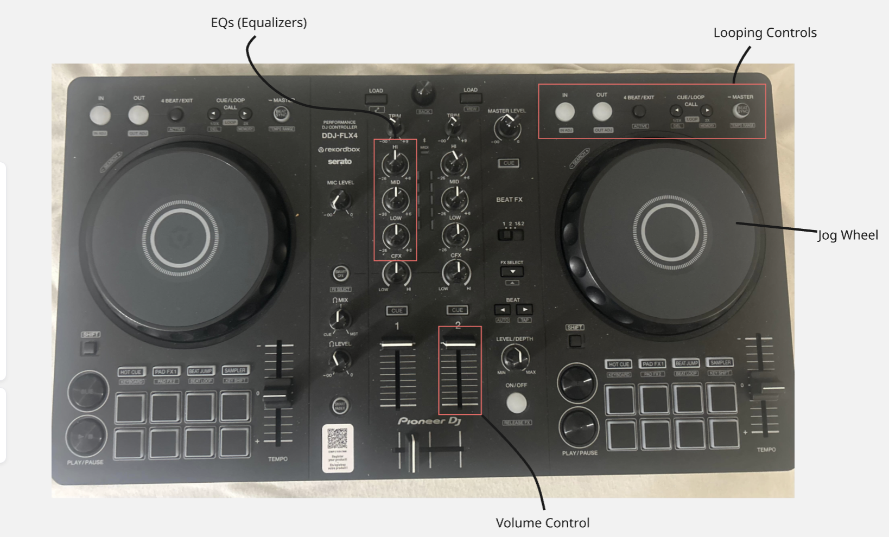
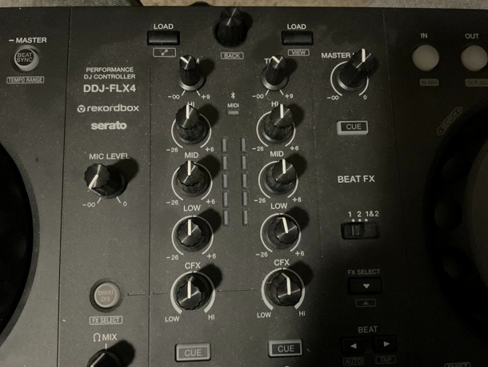
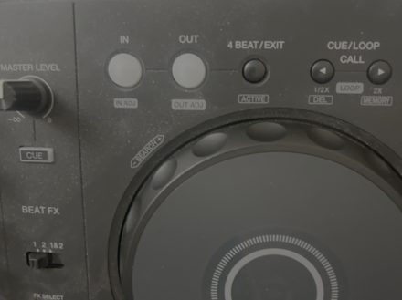
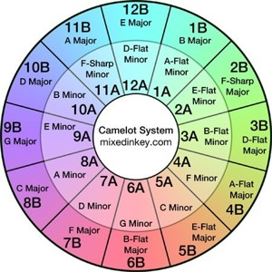

If you have been to a club, wedding, party, or rave, chances are, a DJ was hired to control the music. As you dance to the music and you watch the DJ, many questions may arise: what does a dj actually do? What does the DJ think about? How does the DJ know what to do? It can also make you wonder if anyone, like yourself, can learn to control the decks using your own spotify playlist. Put simply, with enough effort and the right coaching, anyone can learn to do this. Keep in mind that this is an art that is simple to get into but takes a lifetime to master.
In this article, I plan to focus on foundational techniques all DJs use, but are extremely effective when employed in the correct manner. Keep in mind that this is only the tip of the iceberg for techniques, and that developing one’s own techniques is key to improvement. This article also shows pictures of my personal DJ controller, the DDJ FLX4, which is a perfect model for those of entry-level. If you have a different controller on hand, additional research may be required to understand its features.
The DDJ-FLX4 is a compact, entry-level, two-deck controller that includes essential tools every DJ needs [1]. I will be explaining how to use features as I describe DJ techniques. Also, the complete list features the DDJ-FLX4 has to offer are outside of the scope of this article, so I encourage you to do your own research to know the full extent of this controller. Below is a diagram of the components that will be useful if you wanted to follow along.

Arguably the most important skill a DJ can have is Beatmatching. Essentially, in order to have smooth transitions between the two songs, a good rule of thumb is to “beatmatch” these songs. The first step in doing this is making sure that they are playing at the same speeds in order to ensure that when the tracks are playing at the same time, the beats don’t conflict, which could make the tracks sound “like horses galloping” due to the off-kilter beats [2]. On the DDJ-FLX4, each deck is assigned to control a certain song. To adjust the speed of the songs, one should make use of their respective sliders located at the bottoms of each deck to raise or lower its Beats Per Minute (BPM) [1], which is the unit of measurement of speed for a song. Though the songs may be playing at the same BPMs, if they still sound off-kilter, one can carefully spin the jog wheel on one of the songs’ decks in order to align the beats such that they cooperate with each other. Keep in mind that this is something that is widely done by ear, so be sure to listen carefully. To help with this, when a song is not playing to the crowd and you are trying to adjust it, you can make use of the deck’s respective “cue” button in order to listen to the track in your headphones as you are adjusting its respective jog wheel [1]. Below, I have attached a demo where I actively use beatmatching. While listening, make note of the fact that before I bring in the second track for the transition between songs, I make sure that the two songs are lined up in terms of beat using my jog wheel.
Many times, beatmatching simply is not enough to make two concurrently-playing tracks mix. To do this, DJs often make use of equalizers. Equalizers (also called EQs for short) are tools used to adjust the volumes of specific frequency ranges [3]. A typical use case of this tool is when two bass lines conflict with each other. Perhaps two songs use different bass lines, emitting different percussive sounds that sound unpleasant when played together normally. You can make use of the “Low EQ” on each deck in order to balance this out, for instance, by cutting the bass line of one song and letting the other one play out. Then, gradually or suddenly, the bass lines are switched to bridge the transition between the two songs. Another demo, making the use of Clarity by Zedd demonstrates the effects the different EQs have on a song. Make note of what happens when I raise/lower each EQ. I have listed the timestamps at which I adjust the different EQs below:

Sometimes, one would want to repeat a certain section of music for a number of times in order to build tension, as elongating said motif for a period of time sustains dancing [4]. As you will see later, this can open the door for a lot of new techniques, such as anticipating a transition, and even wordplay. On the DDJ-FLX4, a loop can be activated for each song by using the buttons at the top corners, as shown below. Each button controls the loop as follows, listed from left to right: to mark the start of the loop, to mark the end of the loop, to set a 4-beat loop, to cut the loop in half, and to elongate the loop by two. I have attached another demo below, this time making use of Swedish House Mafia's "Don't You Worry Child." In this demo, I play around with the loop-setting features on the DDJ FLX4 - first setting a 4-beat loop, then elongating it by two, and then repeatedly cutting it in half by two.

When transitioning between songs, it is often a good practice to apply some basic music theory when picking the songs to transition between. Though I could write multiple books on all music theory concepts, arguably the most important concept is that of the circle of fifths. To give some context, every song has a key that it surrounds, which is essentially a description of the notes its harmony consists of. In order to assure smooth harmonic transition, transitioning between songs in similar keys will allow this [5] . In order to keep track of this relationship, the Circle of Fifths is used as a reference, which is otherwise known as the Camelot Wheel for simplification purposes (shown below). The more adjacent a key is to another, the smoother the transition will be harmonically. For instance, if a song has the 10A key signature, it would create a smooth harmonic transition if one were to transition to a song that is either in 10A, 10B, 11A, or 9A (insert image below).

In order to show how one can put these DJing techniques into practice, I have recorded myself making a transition between two songs: Starships by Nicki Minaj and One More Time by Daft Punk. Though this transition can be seen as overplayed, it is simple, but effective enough to provide a sense of interactivity and enjoyment with the crowd. After all, the main job of any DJ is to engage the crowd with music. Before listening, I encourage you to keep a few things in mind. First, both songs are in the 10B key, which allows for smooth harmonic transitioning. To begin the transition, I first make sure that both songs are playing at the same tempo. When the first song, Starships, says the lyrics “one more time,” I cue a 4-beat loop such that it repeats the lyrics over and over again. I then start to play the second song, One More Time, but without volume, aligning the two with my jog wheel before I actually increase the volume. As I raise the volume on second song, I use my low EQ to filter out the bass of the first song, such that it does not conflict with the second song’s bass line. As One More Time gets closer to the initial beat drop, I halve the loop on Starships, building tension until I cut the song off right before the drop begins, creating an effect of wordplay between similar lyrics.
DJing is a much more complicated art than one would expect. However, with the right tools and practice, one can create smooth transitions that are not only pleasing to the ear, but also engaging to the crowd. In this article, we discovered four major techniques that anyone can employ in their DJing sets: beatmatching, the use of equalizers for balancing sound, looping for the repetition of motifs, and music theory for harmonically smooth transitions. Though you may think that DJing is expensive in terms of equipment, and rightfully so, it is now possible to DJ with just your IPhone and a Spotify playlist. Using apps such as the DJay app with a Spotify Premium account, you can employ these techniques for a relatively low price - perfect for anyone who wants to dip their toes in the craft [6] [7]. If you have an interest in music, why not experiment with it, and maybe even please a crowd of your own.
Emmett Dennis is a first-year dual-degree computer engineering student at Washington University in St. Louis. Outside of class, he is involved in WashU Robotics as a member of the SWARM Embedded Software Team. Along with coding, his interests mainly include gaming, doing crosswords, and DJing. Emmett started to DJ in January of 2026, being interested in progressive house, trance, and melodic dubstep, as they evoke nostalgia, emotion, or both.
This article is meant for anyone who wants to learn how to DJ and is starting from the ground up. Many of us wonder what is going on behind the decks as the DJ controls them, so I hope to bust this myth and introduce you to techniques anyone can learn to become a DJ.
[1] "DDJ-FLX4." Pioneer DJ, 30 Apr. 2026, https://www.pioneerdj.com/en/product/dj-controllers/ddj-flx4/.
[2] Mnguni, Thozamile. "How to DJ for Beginners (It's Easy)." YouTube, uploaded by Thozi, 5 Jan. 2025.
[3] "What Is Equalization (EQ) for Music and Audio?" Sonos, https://www.sonos.com/en-us/blog/what-is-eq.
[4] Mouraviev, I. "DJ Performance Analysis: Issues, Concepts, Methods." Performance Research, vol. 29, no. 6, 2024, pp. 130–137, https://doi.org/10.1080/13528165.2024.2537579. Accessed 30 Mar. 2026.
[5] "Visual Guide: Mixing with the Camelot Wheel." Mixed in Key, https://mixedinkey.com/book/how-to-use-harmonic-mixing/interview-with-mark-davis/.
[6] "Spotify Logo." Amazon, https://www.amazon.com/Spotify-Music/dp/B00KLBR6IC.
[7] "DJay Logo." Microsoft, https://apps.microsoft.com/detail/9p9rb7zf49xk.